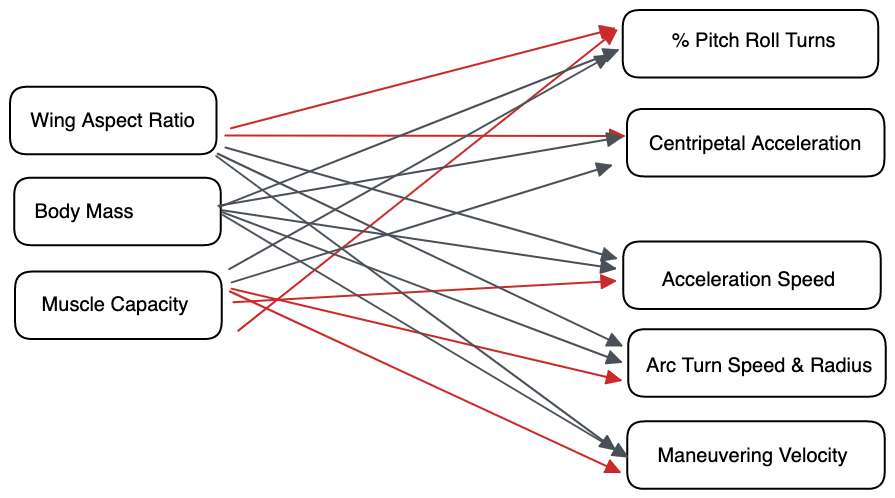

A Model to Connect Hummingbird Phenotypes to Flight Performance
Project Introduction
For my project, I propose methods to understand the social dominance of hummingbirds and how social hierarchies are maintained. To evaluate this, I will use both field and lab work to create a model that reflects the phenotype > performance > fitness paradigm presented by Arnold in 1983 (Arnold, 1983). The actual variables I will measure are outlined below in the Measurement Variables section. In brief, during the summer of 2023 at the Field Research Station at Fort Missoula, I will conduct experiments up with dyadic trials between two male hummingbirds where a limiting resource is introduced (nectar or perches) to establish which individual maintains access to this resource and chases away an opponent. I will then connect these wins to traits that vary between individuals. These phenotypes will be morphometric traits, such as body and wing morphological. Performance will be evaluated via analysis of flight kinematic complexity and metabolic efficiency.
Lastly, with these characteristics I seek to understand how phenotypes and performances connect to overall fitness in an ecological landscape. To do this, I will be using dominance over a nectar resource landscape-and presumably the resulting access to food and mates–as a proxy for an individual’s overall fitness. I will understand which individuals are dominant from fight data from the field and winning individuals’ phenotypes. I can then combine these data with the fine-tuned phenotypic data and one-on-one fight results from lab trials. With this, I seek to establish what phenotypes and fitness performance traits are most predictable of social dominance hierarchies in hummingbirds.
Project Question
The above summarizes my project’s overall goals. First, I will investigate only the phenotype to performance transitions in my model. I will explote if individual’s performance is predictable and can be modeled through Bayesian methods. As a result of this simplified goal, I ask:
What variables in a complex suite of hummingbird morphological traits and flight maneuvers predict flight characteristics that are associated with increased speed and maneuverability?
Method
Arnold’s Paradigm
Overall, I will be approaching this work using the Arnold’s Paradigm proposed in his 1983 paper. The framework below (Bergmann and McElroy, 2014) illustrates this experiment method graphically.

Structural Equation Model (SEM)
To approach this proposed Arnold’s Paradigm, I will first need to understand the relative influence of a bird’s actual body condition, an unknown variable we can’t fully know, on the phenotypic traits I will measure. I will also need to understand the relative influence of each phenotypic trait on the flight and metabolic performance measures that I measure. To do this, I will be using a Structural Equation Model, which is an appropriate model to represent how latent variables (those that are thought to exist but cannot be directly observed, e.g. body quality) are causally connected to variables that i can measure (e.g. flight and metabolic performance metrics).
Structural Equation Models are representing the relative contribution of each exogenous variable (solely predictors, e.g. phenotypes) to a causal relationship with one or several exogenous variables (both predicted and predictive variables, e.g. flight performance). Between each variable, a path can be drawn. Multiple paths each represent a partial regression coefficient, illustration the join influence of each predictor on the response variable’s value.
Piecewise SEM
For each combination of endogenous variables, relationships are estimated as local estimations, meaning they aren’t dependent on other relationships between one of the variables with another set of variables. This is called Piecewise SEM and allows for evaluation of each relationship individually, then stringing together these inferences, in a piecewise fashion.
Path Model
I will represent this model with a path diagram, which illustrates each piece of the piecewise SEM visually. This path diagram also assumes no reversals between variables (unidirectional) and no changes in variable values that are informed by a latter variables value (feedback). These assumptions are appropriate for the variables of this project.
Paths in a path model can be summarize into a matrix of regressions between each pairs of variables. This matrix is valuable, as it will be modelling data that I have input, but producing a matrix of regressions. I can then input secondary data sets to test if this matrix of regressions in secondary data sets match those in the original data set.
Below is the proposed path model, without regression values, that I intend to quantify. Red arrows indicate paths that I propose have large influences on the endogenous variables while gray arrows are those that I hypothesize will have weak correlations.

Data
Measurement Variables
I will be using a modified version of the Arnold’s Paradigm, but instead of comparing the phenotype-performance relationship of each species, I will be evaluating this on an individual level. My measurements, and their categories, will be:
Phenotypic Measures:
Body Mass
Wing Aspect Ratio
Burst Muscle Capacity
Performance Measures:
Flight accelerations
Arcing turn speed and radii
Maneuvering velocity
Centripetal Acceleration
Percentage of turns that are complex pitch-roll turns
Calypte anna Repository Data
I will be holding 6 Calliope Hummingbirds (Selasphorus calliope) captive in the spring of 2023. As I do not yet have data, I have found public repositories of data similar to that which I will collect.
Below is code I have written to explore data collected in Segre et al., 2015, an eLife publication exploring phenotypes and flight performance. The authors evaluated this data using an information-theoretic approach which compares the several possible scenarios and weights their relative predictive importance. The authors evaluated these data using a canned R function, nlme, therefore I would like to evaluate the same data with the Structural Equation Model (SEM) I have proposed already.
Below are the steps I have taken to first understand this data:
- Load the necessary libraries
- Load the csv of data from this publication and print the heading of the data.
I next am filtering and cleaning this data. I am removing data from solo trials, and keeping only competitive trials. The assumption is that birds perform flight maneuvers with increases speed or maneuverability in the presence of another individual. Therefore, I only include data from competitive trials. Further I am selecting data I am interested in from this original data set.
- In this code chunk, I also create a summary data frame with means and variances for each variable. This chunk is not printed for simplicity.
Transforming Data
Because I am investigating the covariance of multiple variables, yet these variables have different magnitude of values, this can be an issue when comparing the relative influence of variables. To address this, I will conduct a Z- transformation to standardize all my simulated data using a X transformation, which follows this formula:
\[ Z_x = \frac{(X_i - \bar X)}{sd(X)} \tag{1}\]
I will execute this in R, creating a new, standardized data set., called annas_trans to represent the transformed values

I conducted my own math to confirm the scale transformation works and with the above figure I am comfortable that this is properly transforming my data.
Creating a Correlation Matrix
I now would like to produce a correlation coefficient for the relationship between each of the studied variables in this study. This will give me the ability to have linear regressions between each variable, which will serve as the parameters in my SEM path model.
Visualizing Original Data
Here, I visualize the original data from this experiment from Segre et al.
# x <- as.factor(0)
# viz <- annas_clean %>%
# cross_join(x, copy = TRUE)
#
# colNames <- names(viz)[1:17]
#
# for (i in colNames) {
# plot <- ggplot(viz, aes_string(x= viz$y, y = i))+
# geom_violin(draw_quantiles = c(0.25, 0.5, 0.75))+
# geom_point() +
# theme_classic()
# print(plot)
# Sys.sleep(2)
#
# }Investigating Distributions of Original Data
I here explore the distributions of the original data. These are many figures, so I won’t print for the time being.
I conclude that some of these data are distributed non-normally and are likely best represented as a beta distribution. For ease of this model, I will estimate that each variable is distributed normally to make for an easier time in Generating Fake Data.
Generating Fake Data
For each variable, I will create a fake data set that has the same mean and variance, with a sample size of 32 individuals (same as the Segre et al., 2015 paper) and a normal distribution.
Below is code I use to generate fake data for each of the variables I’m investigating and visualizations of the data generated.
First, here is the heading of the data I generated.
In these visualizations, blue points represent the simulated data and red points represent the real data. This code will cycle through and generate data and visualizations for several, but not all of the Measurement Variables (in the interest of space).
Running a Phenotype-Performance Model
Creating a Stan Model
I have only begun to create a Stan Model, but intend to use the method published in Merkle et al., 2021 and am currently working on understanding this method.
I will input the Stan code below.
Running Stan Model
# annas_data_simu <- list(
# n = length(w.lifted.simu),
# mhoracel = as.numeric(mean.hor_acel_simu),
# wlifted = as.numeric(w.lifted.simu)
# )
#
# annas_fit <- stan(file = "annas_performance_model.stan", data = annas_data_simu, iter = 1000, chains = 4)
# print(annas_fit)References
Arnold. 1983. Morphology, Performance and Fitness. American Zoology 23:347-361.
Bergmann and McElroy. 2014. Many-to-Many Mapping of Phenotype to Performance: An Extension of the F-Matrix for Studying Functional Complexity. Evolutionary Biology 41:546–560. DOI 10.1007/s11692-014-9288-1
Garnier-Villarreal, M. and Jorgensen, T.D. 2019.Adapting fit indices for Bayesian structural equation modeling: Comparison to maximum likelihood. Psychological Methods. DOI: 10.1037/met0000224
Márquez-Luna et al. 2022. Genetic relatedness and morphology as drivers of interspecific dominance hierarchy in hummingbirds. PeerJ. DOI 10.7717/peerj.13331
Merkle, E.C. et al. 2021. Efficient Bayesian Structural Equation Modeling in Stan. Journal of Statistical Software. DOI: 10.18637/jss.v100.i06.